승강기기사 (2019-04-27 기출문제)
1과목: 승강기 개론
1. 교류 2단 속도 제어방식에서 크리프 시간이란 무엇인가?
- 저속 주행 시간
- 고속 주행 시간
- 속도 변환 시간
- 가속 및 감속 시간
(정답률: 85%)

2. 유압엘리베이터의 유압회로 내에서 오일 필터가 설치되는 곳은?
- 펌프의 흡입측에 설치된다.
- 펌프의 도출측에 설치된다.
- 펌프의 흡입측과 토출측 모두에 설치된다.
- 완전 밀폐형이기 때문에 설치할 필요가 없다.
(정답률: 80%)
3. 전기식 엘리베이터에 비하여 유압식 엘리베이터의 특징으로 적합하지 않은 것은?
- 기계실의 위치가 자유롭다.
- 전동기의 소요 동력이 작다.
- 승강로 상부 틈새가 작아도 된다.
- 건물 꼭대기 부분에 하중이 걸리지 않는다.
(정답률: 72%)
4. 엘리베이터의 정격속도가 매 분당 180m이고, 제동소요 시간이 0.3초인 경우의 제동거리는 몇 m 인가?
- 0.25
- 0.45
- 0.65
- 0.85
(정답률: 58%)
5. 엘리베이터용 진동기의 소요동력을 결정하는 인자가 아닌 것은?
- 정격하중
- 정격속도
- 주로프 직경
- 오버밸런스율
(정답률: 83%)
6. 엘리베이터에 관련된 안전율 기준으로 해당 안전율 기준에 미달되는 것은?
- 조속기(과속조절기) 로프는 8 이상이다.
- 유압식엘리베이터의 가요성 호스는 8 이상이다.
- 덤웨이터(소형화물용 엘리베이터)의 체인은 4 이상이다.
- 보상 단수(로프, 체인, 벨트 및 그 단말부)은 안전율 5 이상이다.
(정답률: 69%)
7. 에스컬레이터 제동기의 설치상태는 견고하고 양호하여야 한다. 적재하중을 작용시키지 않고 스텝이 하강할 때 정격속도가 0.5m/s인 경우 정지거리는 몇 m 사이이어야 하는가?
- 0.1 ~ 0.9
- 0.2 ~ 1.0
- 0.3 ~ 1.1
- 0.4 ~ 1.2
(정답률: 81%)
8. 기계실의 조명에 관한 설명으로 옳은 것은?
- 조명스위치는 기계실 제어만 가까운 곳에 설치한다.
- 조명기구는 승강기 형식승인품을 사용하여야 한다.
- 조도는 기기가 배치된 바닥면에서 200lx 이상이어야 한다.
- 조명전원은 엘리베이터 제어전원에서 분기하여 사용하여야 한다.
(정답률: 79%)
9. 카의 고장으로 카가 정격속도의 115%를 초과하지 않고 최하층을 통과하여 피트로 떨어졌을 때 충격을 완화시켜 주기 위하여 설치하는 안전장치는?
- 완충기
- 브레이크
- 조속기(과속조절기)
- 비상정지장치(추락방지안전장치)
(정답률: 87%)
10. 유압식 엘리베이터를 구동시키고 정지시키는 구동기의 구성 부품으로 틀린 것은?
- 스프로킷
- 제어밸브
- 펌프 조립체
- 펌플 전동기
(정답률: 78%)
11. 단일 승강로에 두 대의 엘리베이터를 이용하면서 각각 독립적으로 운행되는 고효율 엘리베이터는?
- 트윈 엘리베이터
- 전망용 엘리베이터
- 더블테크 엘리베이터
- 조닝방식 엘리베이터
(정답률: 71%)
12. 기계실의 구조에 대한 설명으로 틀린 것은?(오류 신고가 접수된 문제입니다. 반드시 정답과 해설을 확인하시기 바랍니다.)
- 다른 부분과 내화구조로 구획한다.
- 다른 부분과 방화구조로 구획한다.
- 내장의 마감은 방청도료를 칠하여야 한다.
- 벽면이 외기에 직접 접하는 경우에는 불연재료로 구획할 수 있다.
(정답률: 74%)
13. 전기식 엘리베이터에서 로프와 도르래 사이의 마찰력 등 미끄러짐에 영향을 미치는 요소가 아닌 것은?
- 로프가 감기는 각도
- 권상기 기어의 감속비
- 케이지의 가속도와 감속도
- 케이지측과 균형추쪽의 로프에 걸리는 중량비
(정답률: 73%)
14. 여러층으로 배치되어 있는 고정된 주차구획에 아래·위로 이동할 수 있는 운반기로 자동차를 자동으로 운반이동하여 주차하도록 설계한 주차장치는?
- 다단식
- 승강기식
- 수직 순환식
- 다층 순환식
(정답률: 65%)
15. 엘리베이터에서 브레이크 시스템이 작동하여야 할 경우가 아닌 것은?
- 주동력 전원공급이 차단되는 경우
- 제어회로에 전원공급이 차단되는 경우
- 카 출발 후 과부하감지장치가 작동했을 경우
- 조속기(과속조절기)의 과속검출 스위치가 작동했을 경우
(정답률: 73%)
16. 완충기에 대한 설명으로 틀린 것은?
- 에어지 분산형 완충기는 작동 후에는 경구적인 변형이 없어야 한다.
- 에너지 분산형 완충기는 엘리베이터 정격속도와 상관없이 사용될 수 있다.
- 에너지 축적형 완충기는 유체의 수위가 쉽게 확인될 수 있는 구조이어야 한다.
- 정격속도 60m/min 이하의 것은 운동에너지가 작아서 선형 또는 비선형 특성을 갖는 에너지 축적형 완충기가 주로 사용된다.
(정답률: 55%)
17. 비상용 엘리베이터의 소방 운전 시 무효화되는 장치가 아닌 것은? (문제 오류로 실제 시험에서는 2, 3, 4번 정답처리 되었습니다. 여기서는 2번을 누르면 정답 처리 됩니다.)
- 문닫힘안전장치
- 조속기(과속조절기)
- 파이널 리미트 스위치
- 비상정지장치(추락방지안전장치)
(정답률: 74%)
18. 군 관리 조작방식의 경우 승강장에서 여러 대의 카 위치표시를 볼 수 없으므로 응답하는 카의 도착을 알리는 장치는?
- 조작반
- 홀 랜턴
- 카 위치 표시기
- 승장 위치 표시기
(정답률: 83%)
19. 엘리베이터의 도어인터록 스위치의 역할에 대한 설명으로 옳은 것은?
- 자기층에 카가 없을 때는 장금이 풀려도 운행된다.
- 카가 운행 중에는 잠금이 풀려도 정지층까지는 운행된다.
- 카가 운행되지 않을 때는 승장문이 손으로 열리도록 한다.
- 승장문의 안전장치로서 잠금이 풀리면 카가 작동하지 않는다.
(정답률: 81%)
20. 궤동식 권상기에 비하여 트랙션 권상기의 장점이라고 볼 수 없는 것은?
- 소요 동력이 작다.
- 승강 행정에 제한이 없다.
- 기계실의 소요 면적이 작다.
- 권과(지나치게 감기는 현상)를 일으키지 않는다.
(정답률: 63%)
2과목: 승강기 설계
21. 1:1 로핑인 엘리베이터의 적재하중이 550kg, 카 자중이 700kg, 단면적이 13.3cm2, 단면계수가 224.6cm3인 SS-400을 사용할 때 상부체대의 응력은 약 몇 ㎏/cm2인가? (단, 상부체대의 전길이는 160㎝이다.)
- 222.6
- 259.8
- 342.4
- 476.1
(정답률: 56%)
22. 직류전동기의 일반적인 제어법이 아닌 것은?
- 저항제어법
- 전압제어법
- 계자제어법
- 주파수제어법
(정답률: 62%)
23. 최대굽힘모멘트 200000 ㎏·㎝, H 250 × 250 × 14 × 9(단면계수 867 cm3)인 기계대의 안전율은 약 얼마인가? (단, 재질은 SS-400, 기준강도 4100 ㎏/cm2이다.)
- 14
- 18
- 22
- 24
(정답률: 51%)
24. 재료의 단순 인장에서 푸아송 비는 어떻게 나타내는가?
- 가로변형률/가로변형률
- 부피변형률/가로변형률
- 가로변형률/세로변형률
- 부피변형률/세로변형률
(정답률: 80%)
25. 승객이 출입하거나 하역하는 동안 착상 정확도가 ± 20㎜ 를 초과할 경우에는 몇 mm 이내로 보정되어야 하는가?
- ±5
- ±7
- ±10
- ±20
(정답률: 71%)
26. 전기식엘리베이터의 기계실 치수에 대한 조건으로 적합한 것은?
- 작업구역의 유효 높이는 4m 이상이어야 한다.
- 직업구역 간 이동동로의 유효 폭은 0.3m 이상이어야 한다.
- 보호되지 않은 회전부품 위로 0.3m 이상의 유효 수직거리가 있어야 한다.
- 기계실 바닥에 0.3m를 초과하는 단자가 있는 경우, 고정된 사다리 또는 보호난간이 있는 계단이나 발판이 있어야 한다.
(정답률: 60%)
27. 에스컬레이터의 모터 용량을 산출하는 식으로 옳은 것은? (단, G:적재하중, V:속도, η:총효율, β:승객승입율, sinθ:에스컬레이터의 경사도)
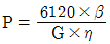
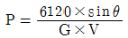
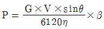
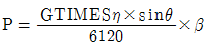
(정답률: 80%)
28. 엘리베이터의 교통량 계산 시 손실시간의 계산과 관련이 없는 것은?
- 승객 수
- 주행거리
- 승객 출입시간
- 도어 개폐시간
(정답률: 51%)
29. 감시반의 기능으로 볼 수 없는 것은?
- 경보기능
- 제어기능
- 통신기능
- 승객감시기능
(정답률: 77%)
30. 스트랜드의 외층소선을 내층소선보다 굵게하여 구성한 로프로 내마모성이 커 엘리베이터 주로프에 가장 많이 사용하는 종류는?
- 실형
- 필러형
- 위링턴형
- 나프레스형
(정답률: 70%)
31. 카 비상정지장치(추락방지안전장치)가 작동될 때 무부하 상태의 카 바닥 또는 정격하중이 균일하게 분포된 부하 상태의 카 바닥은 정상적인 위치에서 몇 %를 초과하여 기울어지지 않아야하는가?
- 1
- 3
- 5
- 7
(정답률: 71%)
32. 300V 이하의 제어반을 설치하는 경우 시행하는 접지공사의 종류로 옳은 것은?(관련 규정 개정전 문제로 여기서는 기존 정답인 3번을 누르면 정답 처리됩니다. 자세한 내용은 해설을 참고하세요.)
- 제1종 접지공사
- 제2종 접지공사
- 제3종 접지공사
- 특별 제3종 접지공사
(정답률: 65%)
33. 오피스빌딩의 경우 엘리베이터의 교통수요를 산출할 때 출근시간 승객 수의 가정으로 가장 합당한 것은?
- 상승방향은 정원의 60%, 하강방향은 없음
- 상승방향은 정원의 80%, 하강방향은 없음
- 상승방향은 정원의 60%, 하강방향은 20%
- 상승방향은 정원의 80%, 하강방향은 20%
(정답률: 65%)
34. 유도전동기의 슬립 s의 범위로 옳은 것은?
- s > 1
- s < 0
- s > 0
- 0 < s < 1
(정답률: 68%)
35. 카 지중이 1⑤0㎏, 적재하중이 1000㎏인 승객용 엘리베이터의 브레이스로드가 65°로 4개가 설치되어 있을 경우 브레이스로드 1개당 작용하는 장력(㎏)은 약 얼마인가?
- 569
- 610
- 1192
- 1220
(정답률: 36%)
36. 엘리베이터용 가이드(주행안내) 레일의 적용시 고려해야할 사항으로 관계가 적은 것은?
- 엘리베이터의 정격속도
- 지진 발생 시 건물의 수평 진동
- 비상정지장치의 작동 시 걸리는 하중
- 불균형한 하중의 적재 시 발생되는 회전트렌드
(정답률: 59%)
37. 두 축이 평행한 기어에 해당하지 않는 것은?
- 스퍼기어
- 베벨기어
- 내접기어
- 헬리컬기어
(정답률: 61%)
38. 카의 자중이 3000㎏, 정격 적재하중이 1000㎏인 엘리베이터의 오버밸런스율이 45%일 때 균형추의 중량은 몇 ㎏인가?
- 3400
- 3450
- 3500
- 3550
(정답률: 69%)
39. 카 바닥 및 카틀 무게의 허용 가능한 상부체대의 최대 처짐량은 전장(span)에 대하여 얼마 이하이어야 하는가?
- 1/900
- 1/920
- 1/960
- 1/1000
(정답률: 70%)
40. 승강로에 대한 설명으로 틀린 것은?
- 승강로에는 1대의 엘리베이터 카만 있을 수 있다.
- 승강로 내에 설치되는 돌출물은 안전상 지장이 없어야 한다.
- 승강로는 누수가 없고 청결상태가 유지되는 구조이어야 한다.
- 유압식 엘리베이터의 잭은 카와 동일한 승강로 내에 있어야 하며, 지면 또는 다른 장소로 연장될 수 있다.
(정답률: 66%)
3과목: 일반기계공학
41. 3줄 나사에서 리드(lead) L과 피치(pitch) p의 관계로 옳은 것은?
- p = L
- L = 1.5p
- p = 3L
- L = 3p
(정답률: 56%)
42. 동일 축 상에 2개 이상의 퍼프 작용 요소를 가지고, 각각 독립된 펌프 작용을 하는 형식의 펌프는?
- 다린 펌프
- 다단 펌프
- 피스본 펌프
- 메인 펌프
(정답률: 52%)
43. 리밍(reaming)에 관한 설명으로 옳은 것은?
- 구멍을 뚫는 기본적인 작업
- 구멍에 암나사를 가공하는 작업
- 구멍 주위를 평면으로 가공하는 작업
- 뚫린 구멍을 정확한 크기와 매끈한 면으로 다듬질하는 작업
(정답률: 64%)
44. 연강의 응력-변형률선도에서 응력이 최고값인 응력은?
- 비례한도
- 인장강도
- 탄성한도
- 항복강도
(정답률: 50%)
45. 1.5m/s의 원주속도로 회전하는 전동축을 지지하는 지널 베어링에서 베어링 하중은 2000N, 마찰계수가 0.04일 때 마찰에 의한 손실 동력은 약 몇 kW인가?
- 0.12
- 0.24
- 0.48
- 0.72
(정답률: 29%)
46. 강화된 강 중의 잔류오스테나이트를 마덴자이트로 변태시켜 시효변경을 방지하기 위한 목적으로 하는 열처리로서 치수의 정확성을 요하는 게이지나 베어링 등을 만들 때 주로 행하는 것은?
- 오스템퍼링
- 마템퍼링
- 심랭처리
- 노멀라이징
(정답률: 50%)
47. 용접부의 검사법 중 시핀 타단의 결함에서 발사되어 오는 반응을 시간적 연관성이 있는 오실로스코프에 받아 기록하는 방법은?
- 침투 탐상검사
- 자분 검사
- 초음파 검사
- 방사선 투과검사
(정답률: 63%)
48. 압력 제어 밸브에서 어느 최소 유량에서 어느 최대 유량까지의 사이에 증대하는 압력은?
- 파괴 압력
- 절대 압력
- 흡입 압력
- 오버라이드 압력
(정답률: 62%)
49. 두 힘 10N과 30N이 직교하고 있다. 합성한 힘의 크기는 약 몇 N인가?
- 31.6
- 38.7
- 40.0
- 44.7
(정답률: 48%)
50. 단둥 왕복펌프의 피스톤 지름이 20cm, 행정 30cm, 피스톤의 매분 왕복횟수가 80, 체적효율 92%일 때 펌프의 양수량은 약 몇 m3/min 인가?
- 0.35
- 0.69
- 0.82
- 1.42
(정답률: 41%)
51. 드릴 차공을 할 때, 가공물과 접촉에 의한 마찰을 줄이기 위하여 절삭날 먼에 주는 각은?
- 나선각(helix angle)
- 선단각(point angle)
- 웨브 각(web angle)
- 날 여유각(lip clearance angle)
(정답률: 62%)
52. 소성가공 중에서 주전자, 물통, 배럴 등의 주름 형상을 만드는 데 적합한 가공은?
- 벌징(bulging)
- 비딩(beading)
- 헤밍(hemming)
- 컬링(curling)
(정답률: 58%)
53. 하중을 한 방향으로만 받는 부품에 이용되는 나사로 압착기, 바이스(vise) 등의 이송 나사에 사용되는 것은?
- 둥근나사
- 사각나사
- 삼각나사
- 톱니나사
(정답률: 57%)
54. Ti의 특성에 대한 설명으로 틀린 것은?
- 비중이 4.5이다.
- Mg과 Al보다 무겁고 철보다 가볍다.
- 전기 및 열의 전도성은 Fe보다 크다.
- 내직성이 우수하다.
(정답률: 61%)
55. 정밀한 금형에 용융금속을 고압, 고속으로 주입하여 주물을 얻는 방법으로 주물표면이 미려하고 정도가 높은 주조법은?
- 셀몰드법
- 원심주조법
- 다이캐스팅법
- 인베스트먼트 주조법
(정답률: 62%)
56. 잇수 40, 피치원 지름 100mm인 표준 스피기어의 원주피치는 약 몇 mm인가?
- 3.93
- 7.85
- 15.70
- 23.55
(정답률: 46%)
57. 제동장치에서 단식 블록 브레이크의 제동력에 대한 설명 중 옳은 것은?
- 제동 토크에 반비례한다.
- 마찰 계수에 반비례한다.
- 브레이크 드럼의 지름에 비례한다.
- 브레이크 드럼과 블록사이의 수직력에 비례한다.
(정답률: 44%)
58. 다음 중 비중이 가장 낮은 경금속인 것은?
- Ag
- Al
- Cu
- Pb
(정답률: 64%)
59. 길이가 50cm인 외괄보에 그림과 같이 ω=4 N/cm인 균일분포하중이 작용할 때 최대 굽힘모멘트의 값은 몇 N·cm인가?
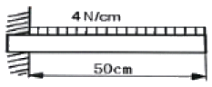
- 5000
- 4000
- 2500
- 2000
(정답률: 30%)
60. 비틀림을 받는 원형 단면 봉에서 발생하는 비틀림 각에 대한 설명 중 옳은 것은?
- 봉의 길에 반비례한다.
- 극단면 2차 모멘트에 반비례한다.
- 전단 탄성계수에 비례한다.
- 비틀림 모멘트에 반비례한다.
(정답률: 45%)
4과목: 전기제어공학
61. 도체가 대전된 경우 도체의 성질과 전하분포에 관한 설명으로 틀린 것은?
- 도체 내부의 전계는 ∞이다.
- 전하는 도체 표면에만 존재한다.
- 도체는 등전위이고 표면은 등전위면이다.
- 도체 표면상의 전계는 면에 대하여 수직이다.
(정답률: 50%)
62. 그림과 같은 피드백 회로의 종합 전달함수는?
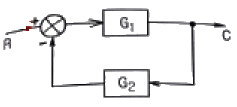
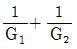
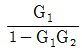
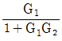
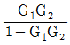
(정답률: 57%)
63. 유도전동기에서 슬립이 ‘0’이란 의미와 같은 것은?
- 유도제동기의 역할을 한다.
- 유도전동기가 정지상태이다.
- 유도전동기가 전부하 운전상태이다.
- 유도전동기가 동기속도로 회전한다.
(정답률: 61%)
64. G(jw)=e-jw0.4 때 w=2.5에서의 위상각은 약 몇 도인가?
- -28.6
- -42.9
- -57.3
- -71.5
(정답률: 34%)
65. 여러 가지 전해액을 이용한 전기분해에서 동일량의 전기로 석출되는 물질의 양은 각각의 화학당량에 비례한다고 하는 법칙은?
- 줄의 법칙
- 렌츠의 법칙
- 쿨롱의 법칙
- 패러데이의 법칙
(정답률: 54%)
66. 제어대상의 상태를 자동적으로 제어하며, 목표값이 제어 공정과 기타의 제한 조건에 순응하면서 가능한 가장 짧은 시간에 요구되는 최종상태까지 가도록 설계하는 제어는?
- 디지털제어
- 적응제어
- 최적제어
- 정치제어
(정답률: 55%)
67. 제어계의 과동응답특성을 해석하기 위해 사용하는 단위계단입력은?
- δ(t)
- u(t)
- -3tu(t)
- sin(120πt)
(정답률: 54%)
68. 제어계의 분류에서 엘리베이터에 적용되는 제어 방법은?
- 정치제어
- 추종제어
- 비율제어
- 프로그램제어
(정답률: 68%)
69. PI 동작의 전달함수는? (단, Kp는 비례감도이고, TI는 직분시간이다.)
- Kp
- KpsTI
- Kp(1+sTI)
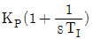
(정답률: 57%)
70. 단위 피드백 제어계통에서 입력과 출력이 같다면 전향전달함수 G(s)의 값은?
- 0
- 9.707
- 1
- ∞
(정답률: 43%)
71. PLC(Programmable Logic Controller)에서, CPU의 구성과 거리가 먼 것은?
- 연산부
- 전원부
- 데이터 메모리부
- 프로그램 메모리부
(정답률: 59%)
72. 200V, 1kW 전열기에서 전열선의 길이를 1/2로 할 경우 소비전력은 몇 kW인가?
- 1
- 2
- 3
- 4
(정답률: 43%)
73. 다음과 같은 회로에 전압계 3대와 저항 10Ω을 설치하여 V1=80V, V2=20V, V3=100V의 실효치 전압을 계측하였다. 이 때 순저항 부하에서 소모하는 유효전력은 몇 W인가?
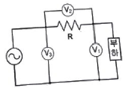
- 160
- 320
- 460
- 640
(정답률: 34%)
74. 어떤 교류전압의 실효값이 100V일 때 최대값은 약 몇 V가 되는가?
- 100
- 141
- 173
- 200
(정답률: 55%)
75. 추종제어에 속하지 않는 제어량은?
- 위치
- 방위
- 자세
- 유량
(정답률: 55%)
76. 90Ω의 저항 3개가 △ 결선으로 되어 있을 때, 상당(단장) 해석을 위한 등가 Y결선에 대한 각 상이 저항 크기는 몇 Ω인가?
- 10
- 30
- 90
- 120
(정답률: 58%)
77. 제어장치가 제어대상에 가하는 제어신호로 제어장치의 출력인 동시에 제어대상의 입력인 신호는?
- 조작량
- 제어량
- 목표값
- 동작신호
(정답률: 44%)
78. 과도 응답의 소멸되는 정도를 나타내는 감쇠비(decay ratio)로 옳은 것은?
- 제2오버슈트/최대오버슈트
- 제4오버슈트/최대오버슈트
- 최대오버슈트/제2오버슈트
- 최대오버슈트/제4오버슈트
(정답률: 51%)
79. 다음 설명은 어떤 자성체를 표현한 것인가?
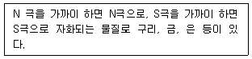
- 강자성체
- 상자성체
- 반자성체
- 초강자성체
(정답률: 54%)
80. 정격주파수 60Hz의 농형 유도전동기를 50Hz의 정격전압에서 사용할 때, 감소하는 것은?
- 토크
- 온도
- 역률
- 여자전류
(정답률: 50%)